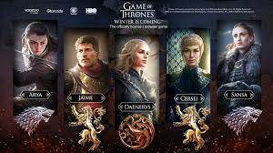
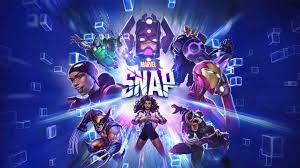

Dota 2

Dota 2 es un videojuego perteneciente al género de Arena de batalla en línea ARTS («estrategia de acción en tiempo real»), también conocido como MOBA, lanzado el 9 de julio del año 2013. El juego fue desarrollado por la empresa Valve Corporation.
Valve Corporation organiza de manera anual el campeonato mundial El Internacional, que en su primera edición fue jugado en la ciudad de Colonia, en Alemania, en el año 2011. La edición de 2015 en el Key Arena (Seattle, Estados Unidos) repartió una cantidad 18.429.613 USD$ y en la edición de 2016 se repartieron unos $20,770,460 USD$.Actualmente el The International es el torneo anual de e-sports que más dinero entrega en premios. También otro torneo importante que organiza Valve Corporation son las llamadas Majors,las cuales empezaron en noviembre de 2015, siendo tres al año y entregando $3,000,000 USD en premios. El año 2017 el premio al mejor equipo de Dota 2 fue de $10,862,683 para el equipo ganador.
Yu Gi Oh! Duel Link

Yu-Gi-Oh! Duel Links es un videojuego de cartas coleccionables digital y gratuito desarrollado por Konami para Windows, iOS y Android. Está basado en el juego de cartas coleccionables del mismo nombre. Después de un período beta inicial, el videojuego se lanzó por primera vez en Japón el 17 de noviembre de 2016 y luego se lanzó al resto del mundo el 11 de enero de 2017. La versión de Windows se lanzó en todo el mundo a través de Steam el 17 de noviembre de 2017.

El videojuego usa un formato conocido como "Duelo de Velocidad" que usa las reglas del juego de cartas coleccionables con varias modificaciones. Los jugadores tienen 4000 puntos de vida, se elimina la fase principal 2, el número de zonas de monstruos y la zona de hechizo / trampa se reduce a 3, el tamaño del mazo principal se reduce a 20-30 cartas cada una y el mazo adicional se reduce a 6, y los jugadores comienzan con una mano de 4 cartas. Los jugadores también pueden usar habilidades que afectan a los duelos de varias maneras.El ganador de un duelo se puede decidir de varias formas: que el jugador reduzca los puntos de vida de su oponente a 0, que el oponente se quede sin cartas o que el jugador gane en condiciones especiales
Game of Thrones Winter is Coming
Game of Thrones Winter is Coming es un juego de estrategia para PC basado en la serie dramática de televisión de HBO, con licencia oficial de Warner Bros. Interactive Entertainment bajo HBO, y desarrollado y publicado por YOOZOO Games. Juega el papel de un ambicioso señor de Westeros, decidido a salvar a un pueblo asolado por la guerra y poner fin a las interminables disputas entre los Siete Reinos.
Este nuevo juego de estrategia se creó con el motor Unity y tiene personajes y escenarios bellamente representados diseñados por artistas de renombre. Game of Thrones Winter is Coming ha sido diseñado para brindar a los jugadores una combinación equilibrada de estrategia y juego de roles para una experiencia de juego única. Construye tu base, expande tu territorio, recluta personajes del programa, entrena a tu ejército y haz historia.
Marvel Snap
Marvel Snap es un videojuego de cartas coleccionables desarrollado por la empresa Second Dinner y publicado por Nuverse para plataformas como Microsoft Windows, Android e iOS. El videojuego posee una gran colección de personajes de Marvel traídos directamente del Universo Marvel así como Adam Warlock y Blue Marvel. El videojuego fue lanzado el día 18 de octubre, después de un periodo de fase de prueba en una versión Beta
Cada jugador tiene un mazo compuesto por 12 cartas. Cada carta es un referencia a un personaje de Marvel, con un coste, un poder, y normalmente una habilidad especial. Al comienzo de cada ronda, los jugadores ponen una carta o más boca abajo en una de las 3 ubicaciones. Las ubicaciones son elegidas aleatoriamente para cada partida, y cada ubicación tiene un efecto diferente. Al final de cada turno las cartas son reveladas y las habilidades especiales de cada carta son efectuadas. Quien tenga el poder más alto en una ubicación, la ganara. La meta del juego es ganar dos de las tres ubicaciones dadas. Las partidas normalmente duran 6 rondas, cada una de las rondas dando un incremento de "energía" para jugar las cartas más poderosas
March Of Empires
arch of Empires es un juego MMO de guerra y estrategia medieval en el que conquistarás y crearás un gran imperio. ¡Fortifica tu castillo y forja un ejército de guerreros para conseguir la dominación global!
¡Prepárate para una era de guerra medieval masiva, donde marcharás sobre los restos en llamas de tus rivales en una búsqueda total para conquistar! ¡Fortalece tu castillo, forja un ejército y entra en el MMO definitivo de dominación global! Pero a medida que crezca tu civilización, te enfrentarás a poderes ambiciosos, ¡y solo un rey puede reclamar el trono! ¿Tienes la fuerza para unificar la tierra bajo tu estandarte? ¿O verás cómo tu reino se derrumba ante ti?